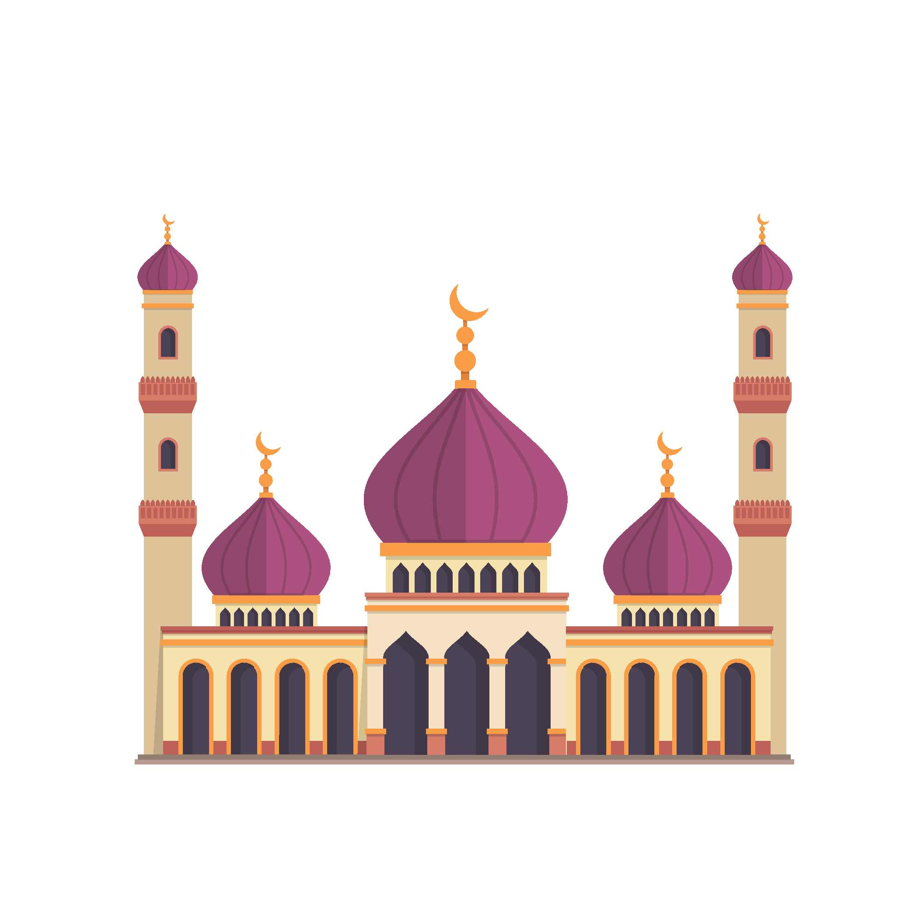
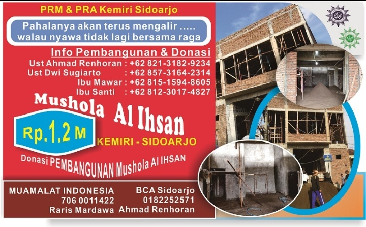

Musholla ini dibangun di Perum Kemiri Indah, Sidoarjo, Jawa Timur

galeri kegiatan

Bagi yang ingin berdonasi silahkan, melalui nomor rekening yang tertera.
(untuk tombol donasi, tidak akan terjadi apa-apa, karena saya membuat web ini hanya sekedar tampilan saja)